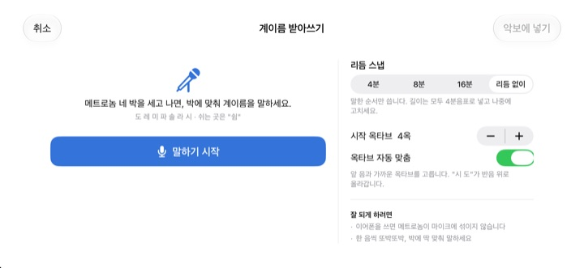
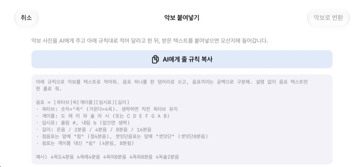

머릿속으로 세지 말고
귀로 확인하세요
헷갈리는 두 마디를 오선지에 옮겨 적고 재생을 누르면, 한 마디 카운트인 뒤 메트로놈에 맞춰 박자와 음높이 그대로 들려줍니다.
모든 기능이 무료입니다. iPhone과 iPad에서 쓸 수 있습니다.

직접 찍고 들어 보세요
오선을 누른 채 위아래로 움직이면 음이 바뀌고, 손을 떼면 음표가 들어갑니다. 재생을 누르면 한 마디 카운트인 뒤 연주합니다. 소리가 나니 볼륨을 확인해 주세요.
박자를 세다가 또 엉킨 적 있나요?
점8분음표 뒤에 16분음표, 그 옆에 셋잇단음표가 붙은 마디는 손가락으로 박을 세다 보면 어느새 엉켜 있습니다. 연습 전날 밤처럼 피아노가 곁에 없을 때도 많습니다. 초견은 그 두 마디를 오선지에 그대로 옮겨 적으면 정확한 박자와 음높이로 들려줍니다.
박자와 음높이를 그대로 들려줍니다
카운트인 한 마디 뒤 메트로놈 클릭에 맞춰 연주하고, 지금 울리는 음표를 주황색으로 짚어 줍니다. 템포는 40에서 200 BPM까지, 박자표는 4/4, 3/4, 2/4, 6/8, 2/2, 3/8 중에서 고릅니다.
같은 박에 음을 쌓으면 화음으로 함께 울리고, 성부는 세 개까지 나눠 적습니다. 높은음자리표, 가온음자리표, 낮은음자리표와 조표도 바꿀 수 있습니다.

계이름을 말하면 음표가 됩니다
메트로놈 네 박을 세고 나서 박에 맞춰 도 레 미를 소리 내어 말하면 오선지에 들어갑니다. 박에 맞춰 말하면 4분, 8분, 16분 단위로 음길이까지 잡히고, 쉬는 곳은 쉼이라고 말합니다.
음성은 기기 안에서만 알아듣고 저장하지 않습니다.

악보 사진은 AI에게, 결과는 붙여넣기로
AI에게 줄 규칙 복사를 눌러 악보 사진과 함께 AI에게 건네고, 받은 글을 붙여넣으면 오선지가 채워집니다. 규칙은 아래 표에 있습니다.
종이 악보를 찍어 화면에 띄워 두고, 보면서 옮겨 적을 수도 있습니다.

시작은 세 단계면 됩니다
- 1
헷갈리는 마디를 고릅니다
앱을 열면 빈 두 마디 오선이 나옵니다.
- 2
음표를 찍습니다
오선을 누르거나 피아노 건반을 쳐서 옮겨 적습니다.
- 3
재생을 누릅니다
카운트인 뒤 메트로놈에 맞춰 들려줍니다.
텍스트로 붙여넣는 규칙
- 4옥도4분음
- 4옥 도, 4분음표 (가온다가 4옥)
- 도4분음
- 옥타브를 빼면 앞 음의 옥타브를 이어 씁니다
- 4옥파#8분음 · 4옥시b4분음
- 올림은 #, 내림은 b
- 온음 · 2분음 · 4분음 · 8분음 · 16분음
- 음길이
- 점4분음
- 점음표
- 셋잇단8분음
- 셋잇단음표
- 4분쉼 · 8분쉼
- 쉼표
- C4:4 D4:8 R:4
- 영어 음이름(C D E F G A B)으로 적어도 됩니다
앱에서 AI에게 줄 규칙 복사를 누르면 이 규칙이 그대로 복사됩니다. 음표끼리는 띄어 씁니다.
모든 기능이 무료입니다
무료
- 오선 입력과 2옥타브 피아노 건반
- 카운트인, 메트로놈과 함께 재생
- 화음과 세 개의 성부
- 조표와 세 가지 음자리표
- 계이름 받아쓰기
- 텍스트 붙여넣기와 참고 사진
개발자 응원하기
- 설정에서 작은 팁을 보낼 수 있습니다
- 팁을 보내도 새로 열리는 기능은 없습니다
구독이 아니라 보낼 때마다 한 번 결제합니다.
광고가 없고 가입할 필요도 없습니다.
자주 묻는 질문
음표는 어떻게 넣나요?
아래 툴바에서 음길이를 먼저 고르고, 오선의 원하는 높이를 누릅니다. 누르는 동안 그 음이 들리고 손을 떼면 음표가 들어갑니다. 건반 단추를 누르면 2옥타브 피아노 건반으로도 넣을 수 있습니다.
화음은 어떻게 만드나요?
툴바의 화음 단추를 켠 채 음을 넣으면 고른 음 위에 쌓여 함께 울립니다.
넣은 음을 고치고 싶어요.
음표를 위아래로 끌면 음높이가, 옆으로 끌면 박 위치가 바뀝니다. 음표를 고른 뒤 ♯ ♭ 단추로 반음씩, 8va 단추로 한 옥타브씩 옮길 수 있습니다.
템포와 박자표는 어디서 바꾸나요?
설정에서 템포, 박자표, 음자리표, 조표를 바꿉니다. 메트로놈과 카운트인도 여기서 켜고 끕니다.
소리가 나지 않아요.
기기의 무음 모드와 미디어 볼륨을 확인해 주세요. 메트로놈만 안 들린다면 설정의 재생 도우미에서 메트로놈이 켜져 있는지 확인해 주세요.
계이름 받아쓰기가 잘 안 돼요.
이어폰을 쓰면 메트로놈 소리가 마이크에 섞이지 않습니다. 한 음씩 또박또박, 박에 딱 맞춰 말해 보세요. 받아쓴 음이 다르면 음표를 끌어서 고치면 됩니다.
카메라는 왜 필요한가요?
종이 악보를 찍어 화면에 참고 사진으로 띄워 두는 데만 씁니다. 찍은 사진은 기기 밖으로 나가지 않습니다. 카메라를 허용하지 않아도 사진 보관함에서 불러올 수 있습니다.
어떤 기기에서 쓸 수 있나요?
iOS 17 이상의 iPhone과 iPad에서 쓸 수 있고, 가로 화면에 맞춰져 있습니다.
제 악보나 목소리가 어딘가로 보내지나요?
아니요. 악보, 사진, 음성은 기기 밖으로 나가지 않고 인터넷 없이도 동작합니다. 앱을 고치는 데 쓰는 익명 사용 통계와 오류 보고만 iCloud로 보냅니다.
문의나 제안은 어디로 하나요?
leeo@kakao.com으로 메일을 보내 주세요. 보통 영업일 기준 2~3일 안에 답장합니다. 버그 제보와 기능 제안은 GitHub의 M1zz/StaffSinger 이슈로도 받습니다.
궁금한 점이나 의견은 leeo@kakao.com로 보내 주세요.